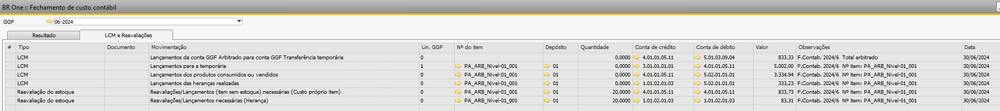

Memória de cálculo: Subindo custos de Herança
Nota
Para uma melhor visualização das imagens, abra-as em outra guia.
Quando é realizado o fechamento de custo, o mesmo considera todos as movimentações e as alocações de custos para assim realizar as movimentações necessárias. Para os itens pais, o processo é similar ao demonstrado anteriormente com o item ‘SA_ARB_Nivel-02_001’, entretanto, para o item pai, o fechamento de custo deve subir os custos de herança.
Que são os custos do item filho (SA) produzido e consumido em uma OP do pai, dentro do período de fechamento.
Considerando a estrutura de produto ‘PA_ARB_Nivel-01_001’:
{kind=link}
Podemos identificar que o mesmo possui um item filho do tipo semi-acabado, o ‘SA_ARB_Nivel-02_001’, logo, no fechamento deve ser alocado os custos deste item filho, para o item pai, isso é o que chamamos de herança.
Para subirmos o custo do SA para o PA na memória de cálculo, primeiro devemos acessar o ‘Relatório de verificação de estoque’ do ‘SA_ARB_Nivel-02_001’ e verificar se houve consumo do mesmo dentro de uma OP, para o item analisado.
Em nosso exemplo, identificamos que houve consumo no dia 31/05, na saída de mercadoria (SO 1339) na OP 757, que é a ordem de produção utilizada para produção do ‘PA_ARB_Nivel-01_001’:
{kind=link}
Identificado que houve consumo em OP, devemos subir o custo dessa herança para o PA, para isso precisamos da ‘Diferença da transação do filho’ para essa linha especificamente.
Recapitulando os cálculos anteriores, identificamos que o valor referido é de 416,55:
{kind=link}
Obs.: O valor considerado deve ser positivo, pois o mesmo está sendo alocado (entrando) nos custos do PA.
Para sequencia precisamos analisar o relatório de verificação de estoque do PA e pegar as seguintes informações:
{kind=link}
Soma das entradas: soma de todas as entradas dentro do período do fechamento.
Soma das entradas = EM1202 + EM1203 + EM1204 + EM1205
Soma das entradas = 30 + 40 + 20 + 10
Soma das entradas = 100
Soma das saídas: soma todas as saídas dentro do período do fechamento.
Soma das saídas = NS126 + NS127
Soma das saídas = 60 + 20
Soma das saídas = 80
Custo unitário: diferença entre ‘Diferença de transação do filho’ com a soma de maior valor.
Custo unitário = ‘Diferença de transação do filho’ / soma de maior valor
Custo unitário = 416,55 / 100
Custo unitário = 4,17
{kind=link}
Com as informações acima basta calcular a diferença de LCM, que é realizada apenas nas saídas vinculadas na OP, dentro do período de fechamento e os valores que serão enviados para CPV (Soma LCMs) e será reavaliado em estoque (Estoque):
{kind=link}
Portanto, ao simular o fechamento de custo para o mês 06/2024, analisando apenas o item ‘PA_ARB_Nivel-01_001’, os valores de herança devem ser conforme calculo abaixo:
{kind=link}
Segue Cadastro de GGF para o mês 06/2024:
{kind=link}
Ao realizar a simulação, temos o rateio na aba ‘Resultado’:
{kind=link}
E os lançamentos na aba ‘LCM e Reavaliações’:
{kind=link}
Conforme calculado acima, os lançamentos de herança deveriam ser:
Um LCM de herança para a conta de CPV no valor de 333,23.
E uma reavaliação de estoque no valor de 83,31.

Como destaque acima, os valores bateram conforme os cálculos realizados, logo, o fechamento de custo levou corretamente os valores de herança para o item pai.